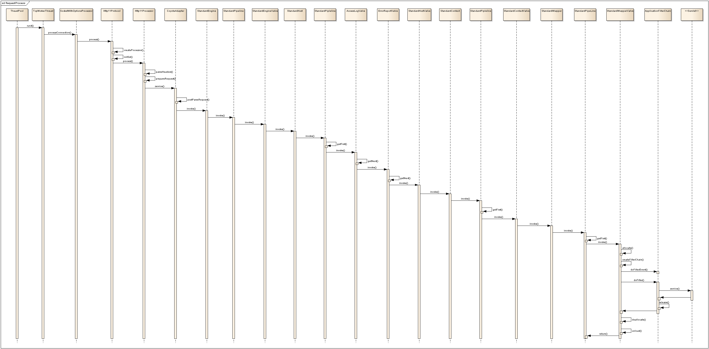

Tomcat笔记
架构
- Server: 整个容器
- Service: 关联Container和Connector的中间人，包含一个Container和多个Connector
- Connector: 负责和客户端的网络通讯，接受/建立连接，接收请求，返回响应
- 维持一个一定大小的线程池，创建多个Processor，当请求来的时候，将socket和processor绑定，然后运行
- Request, Response是在这里创建的，然后传递给Container
- 低版本Tomcat可以修改配置文件server.xml，为Connector使用
protocol="org.apache.coyote.http11.Http11NioProtocol"
- Container: 所有容器的父接口，下面4个重要的实现类/子接口
- Engine, Host, Context, Wrapper
- 4个之间不是并列关系，是父子包含关系
- Engine: 是一个Service的根容器，处理请求的总管道 Pipeline
- Host: Engine的子容器，负责处理访问某特定host的请求。还实现了Deployer接口，实现应用程序的展开、部署、启动
- Context: Host的子容器，负责处理访问某特定路径 path 的请求。也是我们的单个应用程序的单位
- Wrapper: Context的子容器，负责调用Filter和Servlet
- LifeCycle: 生命周期管理，包括父容器启动时，分别启动子容器。父容器结束前，分别结束子容器
- Pipeline: Valve的容器，请求传递的责任链。Pipeline内的Valve依次调用，最后一个Valve调用下一层级的Pipeline
EngineValve1 -> EngineValve2 -> ... -> StandardEngineValve -> HostPipeline
- Valve: Pipeline的切入点
- StandardEngineValve: Engine pipeline上最后一个valve，调用Host
- StandardHostValve: Host pipeline上最后一个valve，调用Context
- StandardContextValve: Context pipeline上最后一个valve，调用Wrapper
- StandardWrapperValve: Wrapper pipeline上最后一个valve，负责生成并调用filterChain，最后调用servlet
处理请求
时序图 
ClassLoader
- 是典型的双亲委托模式 Parents Delegation Model
- 要求：
- common目录下的类被Tomcat和应用使用
- server目录下的类只被Tomcat使用
- shared目录下的类可以被所有应用使用
- 应用目录下的类只可以被本应用使用
- 实现（ClassLoader层级关系）：